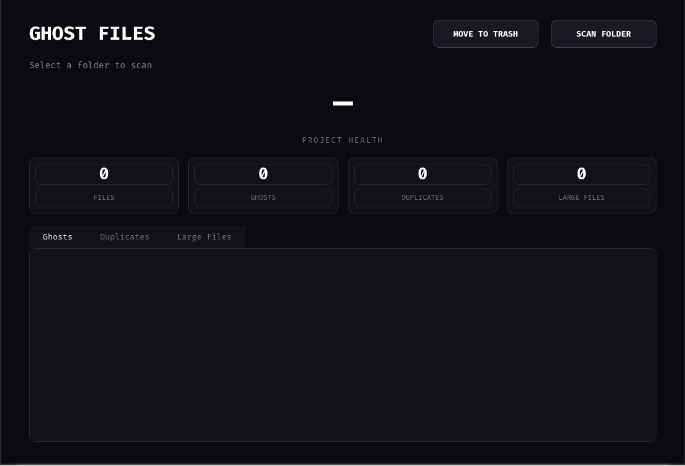

Ghost Files
A lightweight cross-platform desktop utility for finding unnecessary, duplicate, temporary, and large files without permanently deleting them.
About
Ghost Files scans a selected folder and identifies files that may be wasting storage or no longer be useful. It combines file analysis, duplicate verification, and storage checks into a simple desktop interface.
Instead of permanently deleting files, Ghost Files moves selected files to the operating system's Trash or Recycle Bin, providing a safer cleanup workflow.
Features
Ghost Detection
Finds empty, temporary, backup, old, swap, and suspicious files.
Duplicate Detection
Uses file size grouping and SHA-256 hashing to verify duplicates.
Large Files
Identifies files that exceed the configured storage threshold.
Safe Cleanup
Moves selected files to Trash or Recycle Bin instead of deleting them permanently.
Health Score
Provides a quick overview of the selected folder's cleanup state.
Automatic Rescanning
Refreshes the results after cleanup so the interface stays accurate.
Dashboard

Technology
Release
Ghost Files v1.0.0 is the initial public release and includes packaged builds for both Linux and Windows.